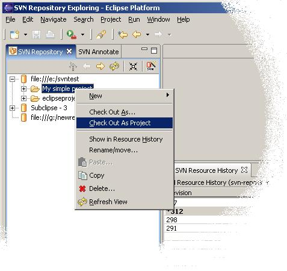

Checking out a Project
Navigate to the SVN Perspective and expand out the previously created repository location.
Right click on the project in the repository and select Check Out As Project and this will
check out the project into your workspace ready to use. Subclipse will attempt to use the same name as
the Eclipse project in the repository (if stored in the .project file).

Once the project is checked out, you can switch to a different perspective and start working.
The Team menu will automatically use the Subversion repository location for comparisons, updates, etc.
Reference:
SVN Repository Exploring Perspective